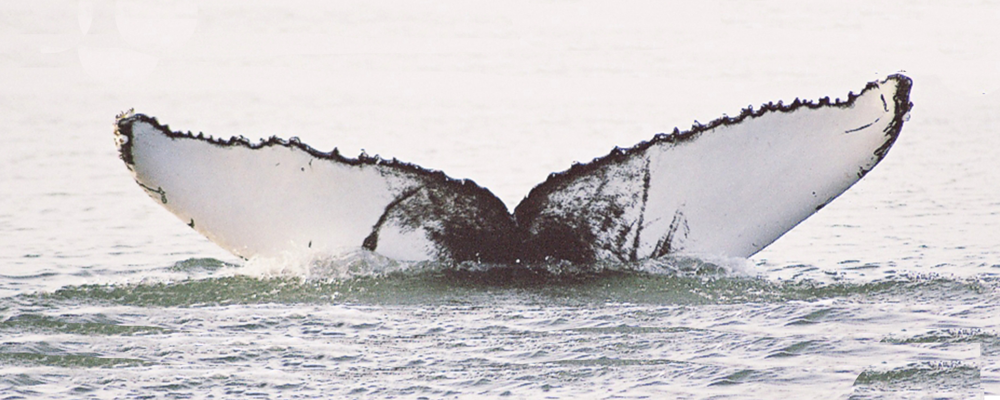
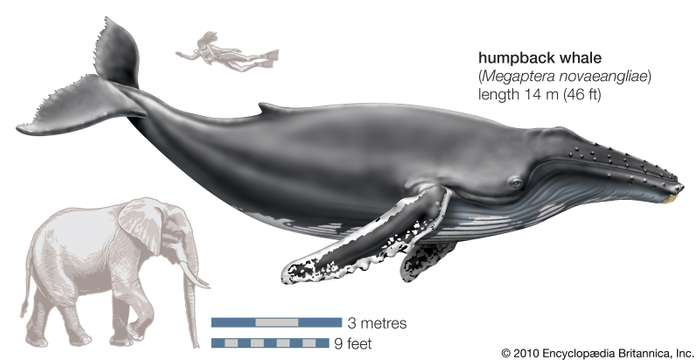
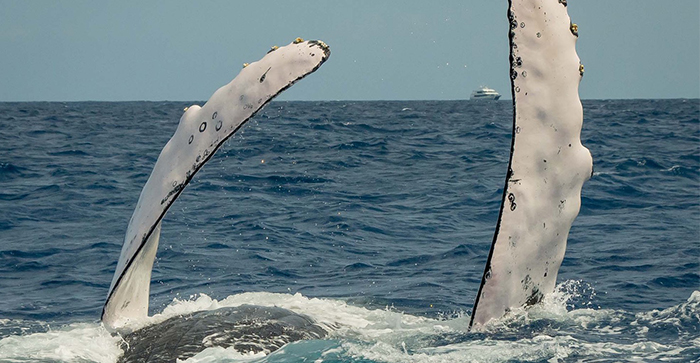
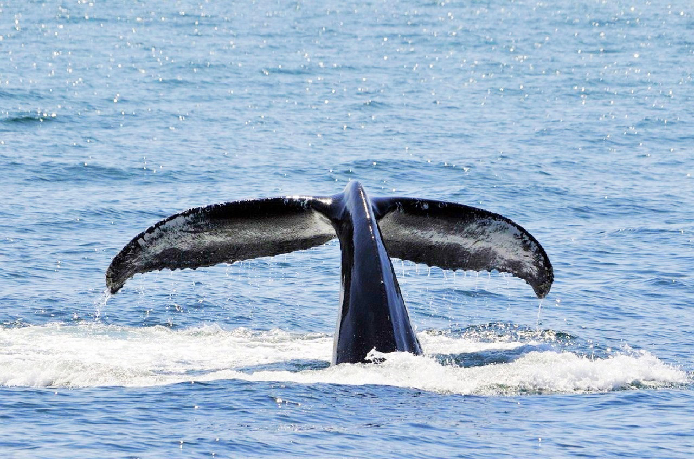
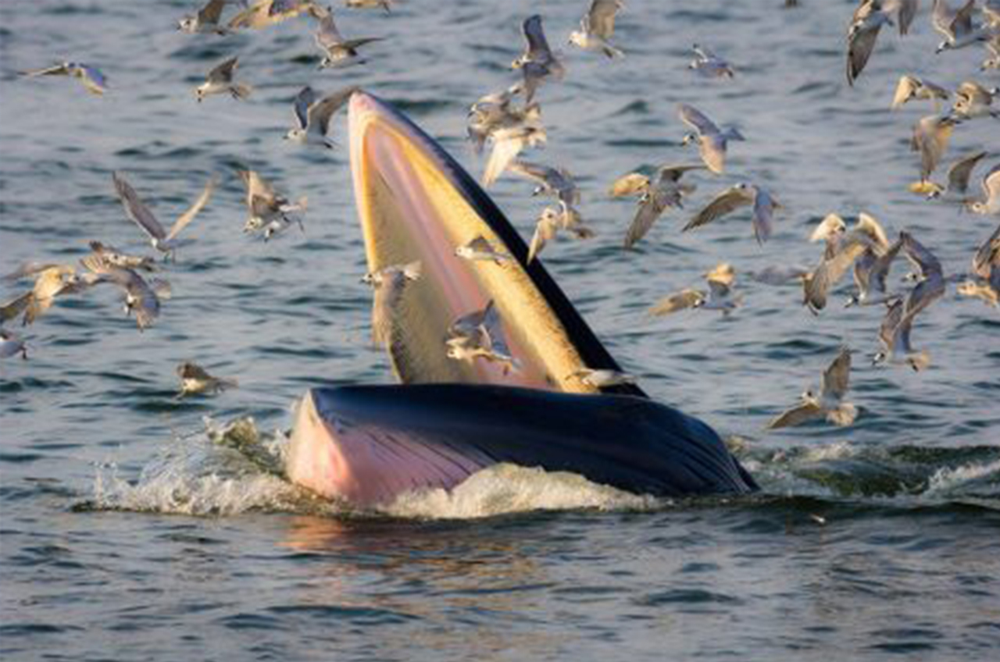
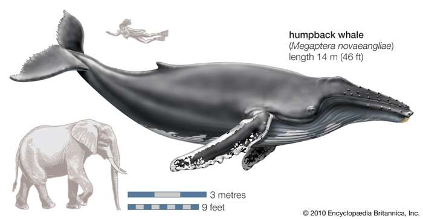
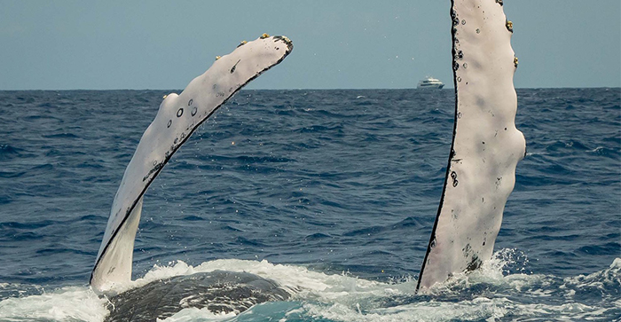

Humpback Whale
Anatomy

Size
Fully grown males average 13–14 m (43–46 ft). Females are slightly larger at 15–16 m (49–52 ft); one large recorded specimen was 19 m (62 ft) long and had pectoral fins measuring 6 m (20 ft) each. The largest humpback on record, according to whaling records, was a female killed in the Caribbean; she was 27 m (89 ft) long with a weight of 90 metric tons (99 short tons).

Fin
The long black and white tail fin can be up to a third of body length. Several hypotheses attempt to explain the humpback's pectoral fins, which are proportionally the longest fins of any cetacean. The higher maneuverability afforded by long fins and the usefulness of the increased surface area for temperature control when migrating between warm and cold climates possibly supported this adaptation.
PHOTOS
Behavior
Interactions
The humpback social structure is loose-knit. Typically, individuals live alone or in small, transient groups that disband after a few hours. Groups may stay together longer in summer to forage and feed cooperatively.Longer-term relationships between pairs or small groups, lasting months or even years, have rarely been observed. Some females possibly retain bonds created via cooperative feeding for a lifetime. Humpback whales often leap out of the water, a behavior known as "breaching", and slap the water with their fins or tails.
Interspecies interactions
Humpbacks are a friendly species that interact with other cetacean species such as bottlenose dolphins. Right whales interact with humpbacks. These behaviors have been recorded in all oceans. Records of humpback and southern right whales demonstrating what were interpreted to be mating behaviors have been documented off the Mozambique and Brazilian coasts. Humpback whales appear in mixed groups with other species, such as the blue, fin, minke, gray and sperm whales. Interaction with gray, fin.
Song
Both male and female humpback whales vocalize, but only males produce the long, loud, complex "song" for which the species is famous. Each song consists of several sounds in a low register, varying in amplitude and frequency and typically lasting from 10 to 20 minutes. Individuals may sing continuously for more than 24 hours. Cetaceans have no vocal cords, instead, they produce sound via a larynx like structure found in the throat.